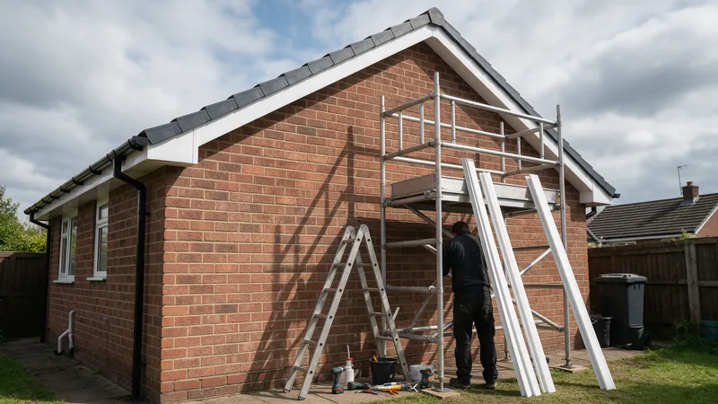
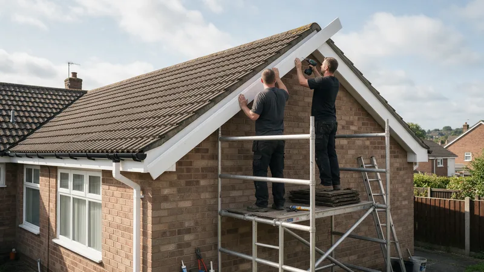
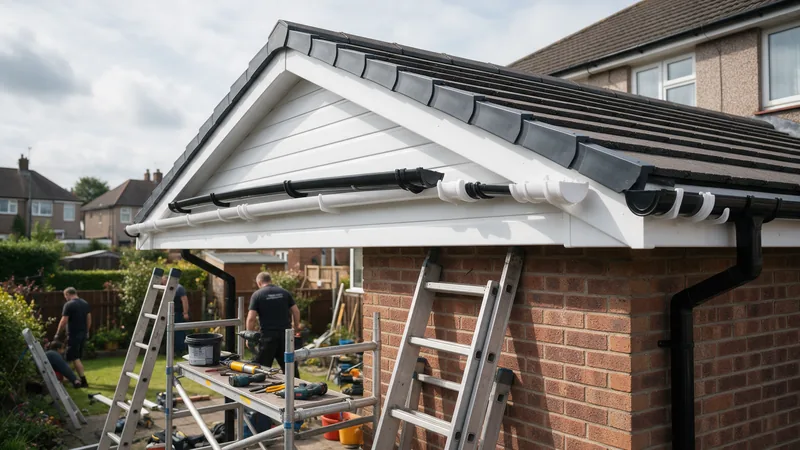
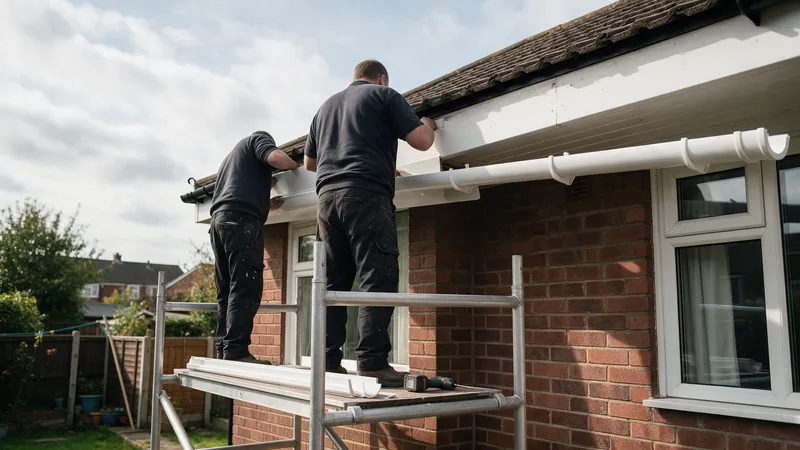

Bargeboards, verges and the gable
A bargeboard is the sloping board up the gable edge of the roof, doing the same job as a fascia but on the slope: closing off the end of the roof structure and keeping weather out of it. Being up high, facing the weather and awkward to reach, it is usually the worst timber on the house and the last to get touched.
Dry verge is the related thing people sometimes mean. That is the line of caps along the gable tiles, replacing the mortar that used to hold them. Mortar on a verge cracks, lets go a bit at a time and ends up on the drive. If a gable is being done anyway, that is the moment to deal with it.
Cladding, and what it is for
uPVC cladding board is used to face something that was always going to need painting every few years: a gable apex, a dormer cheek, the panel above a bay, a porch. It is shiplap or flat board, fixed over a sound background, and it comes in white, woodgrain and the greys.
What it is not is a cure for something wet. Board over damp timber or a wall that is taking water from somewhere else and you have hidden it, not stopped it. So we look at why the timber has gone, and if the answer is water coming from the roof or a bad verge, that gets sorted first or the cladding is a waste of your money.
Why the access decides the timing
Gable work needs a scaffold or a tower, and that is a real part of the cost. If you are having a roofline done, the gable is the cheapest it will ever be to do, because the access is already up and paid for. Leave it for two years and you pay for the access twice. We will put it on the quote as a separate line so you can see exactly what it adds and decide with your eyes open.
 Generated photo
Generated photoGenerated for this demo. Not a photograph of a real job.

Generated photoThe access is a real part of a gable job, so it goes on the quote as its own line. Generated for this demo.
On the job
How this one usually goes.
- Access to the gableScaffold or a tower, with the platform at the right height to work along the slope rather than reaching up at it from a ladder.
- Old bargeboard offOff rather than covered, so the end of the roof structure can be looked at. This is the timber most likely to have gone on the whole house.
- Sort out what is behind itSoft timber made good, the verge looked at, and anything that wants a roofer flagged up with a photograph rather than boarded over.
- New board and cladding onBargeboard up the slope to a line, then cladding where it is part of the job, fixed to sound timber and sealed at the top edge.
- Dry verge if it is wantedCaps along the gable tiles instead of cracked mortar, where the tiles suit it. Quoted separately so you can take it or leave it.
A sample running order for this demo. Yours depends on the house and what we find when the board comes off.
Questions
Asked about this job.
What is the difference between a fascia and a bargeboard?
The job is the same, the position is not. A fascia runs level along the eaves, where the gutter is. A bargeboard runs up the sloping edge at the gable end, where there is no gutter. Bargeboards usually rot first because they catch more weather and get painted least.
Can you clad over my painted gable?
Usually, provided what is behind it is dry and sound. If the timber is wet we want to know why first, because cladding over a wet background hides a problem rather than fixing it. We will tell you which one yours is.
Is dry verge worth doing?
If your verge mortar is cracked or dropping, it saves you doing it again every few years, and it is cheapest while the scaffold is up. It depends on the tiles, because not every profile takes a cap. We will say whether yours does rather than guessing.
Can I just have the gable done and leave the rest?
Yes, and sometimes that is the sensible order. The thing to weigh up is the access: if the rest will need doing in the next couple of years, doing it all on one scaffold costs less than two visits. We will show you both ways on the quote.
General trade knowledge written for this demo, not advice on your property.
Our work
Sample jobs like this.
Generated photoGable faced in shiplapLongridge Sample
Generated photoBargeboard up the vergeRibchester Sample
Generated photoThe lot done in one goGreat Harwood Sample
Generated photoNew fascia going on at the eavesClitheroe SampleMade up samples with generated pictures. Tap one for the detail.
Also
The other things we do.
Gutter cleaning
Cleared out by hand from the top down, the outlet checked, the downpipe run through and the muck taken away rather than tipped in your border.
More →Gutter repairs and replacement
A dripping joint, a dropped bracket, a run that holds water in the middle. Most of it is a length and a seal rather than the whole set.
More →Fascias and soffits
The board the gutter hangs off and the board underneath it. Old timber comes off, the roof edge gets looked at, and the vents go back in.
More →Downpipes
Clips into the mortar, a swan neck that actually clears the eaves, and the bottom going into a gully rather than on to the path.
More →Roofline replacement in uPVC
Fascia, soffit, gutter, bargeboard and the gable, all changed together in one go. One set of access, one mess, one finish.
More →Shall somebody come and look up at it?
Tell us which side of the house and your postcode. If it is pouring over tonight or a pipe has come off the wall, use the urgent line instead.